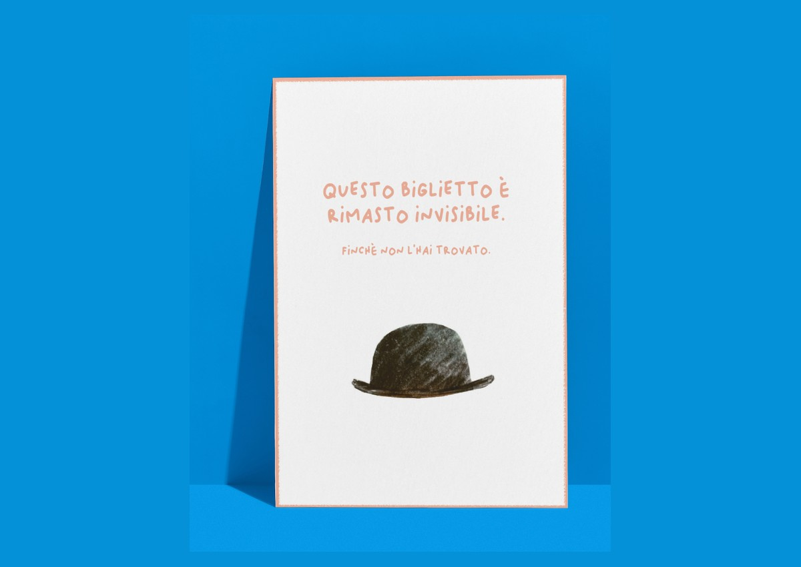

Mi manchi una balena
Postcard
A postcard inspired by Mi manchi una balena. Print it, write a message on the back and give it to someone you care about.
Here you will find activities, postcards, games and little gifts inspired by my books. Download them for free, print them and use them at home, at school, in the library or wherever stories live on.
Printable downloads are currently available in Italian.
A postcard inspired by Mi manchi una balena. Print it, write a message on the back and give it to someone you care about.

A note to print and leave between the pages of a book. Offer the person who finds it a kind word, a thought or a little drawing.
Inspired by Lukas, but ready to travel in any book.
This collection will grow alongside the stories. From time to time, a new little gift will appear to print, use or send on its way.